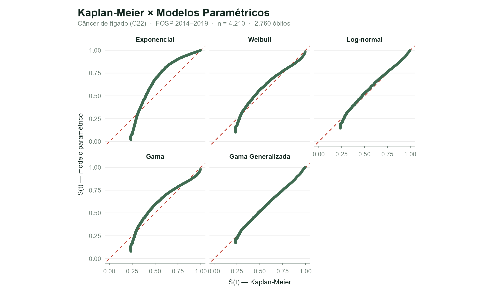
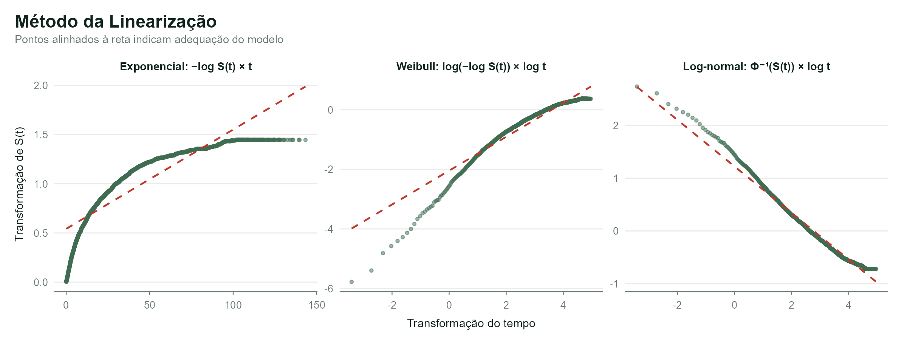
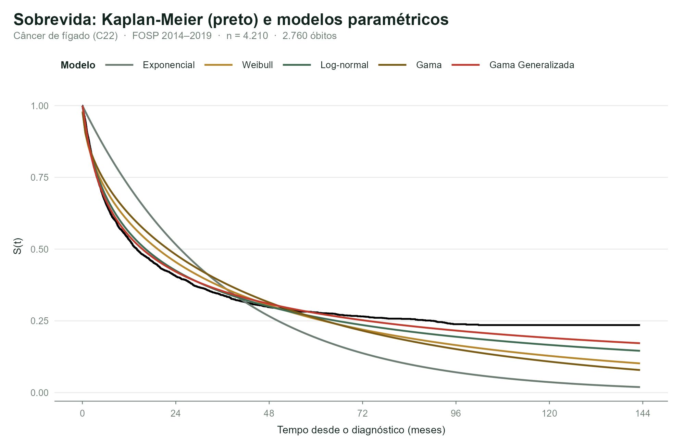
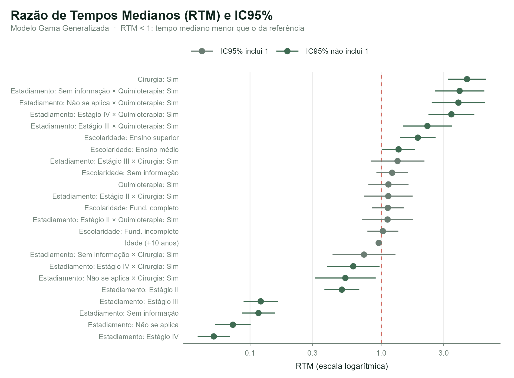

Análise de Sobrevivência
Câncer de Fígado
Parte II: Modelos Paramétricos
Caio Salviano · caiosalviano@id.uff.br
Universidade Federal Fluminense
18/11/2026
Introdução
Retomada da Parte I
O que a Parte I estabeleceu
👥 Pacientes
4.231
C22 · FOSP · 2014–2019
💀 Óbitos por câncer
2.774
65,6% · evento de interesse
⏱️ Mediana global
13,9
meses de sobrevida
🚫 Censuras
1.457
34,4% · sem óbito por câncer
Por que uma Parte II?
Parte I
Análise univariada e não paramétrica: estadiamento, escolaridade e cirurgia separaram as curvas.
Limite
Cada fator foi avaliado isoladamente; os efeitos se sobrepõem e não foram separados entre si.
Pergunta da Parte II
Qual distribuição descreve o tempo até o óbito e quais covariáveis continuam importantes quando analisadas em conjunto?
Objetivo
I
Sem covariáveis
Qual distribuição descreve o tempo até o óbito por câncer de fígado?
ExponencialWeibullLog-normalGamaGama Generalizada
Escolha por gráficos, AIC/BIC e Teste da Razão de Verossimilhanças
II
Com covariáveis
Quais fatores permanecem no modelo e quanto mudam o tempo de sobrevida?
Seleção de variáveisDiagnósticoRazão de tempos medianos
Interpretação em termos de tempo mediano de sobrevida
Metodologia
Escolha da Distribuição
Modelos ajustados
1
dist = “exponential” Exponencial
2
dist = “weibull” Weibull
3
dist = “lnorm” Log-normal
4
dist = “gamma” Gama
5
dist = “gengamma” Gama Generalizada
Todos ajustados com flexsurvreg()
Critérios de escolha
Kaplan-Meier × modelo · pontos próximos da diagonal indicam bom ajuste
Linearização · reta indica adequação (Exponencial, Weibull, Log-normal)
AIC e BIC · menor valor, ajuste penalizado pela complexidade
TRV · cada modelo contra a Gama Generalizada (modelos aninhados)
A decisão combina os quatro critérios; em caso de dúvida, o modelo mais simples
Seleção de Variáveis
Os 5 passos de seleção · TRV a 10% + BIC
Passo 1
Uma a uma contra o modelo nulo
▶
Passo 2
Modelo múltiplo, retirando uma por vez
▶
Passo 3
Reentrada das descartadas
▶
Passo 4
Reavaliação das excluídas no passo 1
▶
Passo 5
Interações (até duas)
Antes do passo 1
Filtro: p < 0,25 no Log-Rank ou no Peto-Peto
Candidatas: 6, com justificativa clínica
Ajuste inicial: Gama Generalizada, depois trocada pela distribuição escolhida
Mesma amostra em todos os modelos comparados
Regra de decisão
Entra/fica se p (TRV) < 0,10 E ΔBIC > 0
ΔBIC = BIC(sem o termo) − BIC(com o termo); positivo favorece manter o termo
Com n = 4.210, o BIC penaliza ≈ 8,3 por parâmetro e evita reter efeitos triviais que o p-valor sozinho aprovaria
Avaliação e Interpretação
Distribuição final
Mesmos critérios da Etapa I, agora com covariáveis
$AIC $BIC TRV
Diagnóstico
Cox-Snell · risco acumulado dos resíduos sobre a reta
Quantílico aleatorizado · qq-plot com banda de confiança
Interpretação
RTM · razão de tempos medianos, com IC95%
Exponencial e Gama usam exp(-coef); as demais exp(coef)
Interações: efeitos lidos em conjunto
Resultados
Kaplan-Meier × Modelos
LeituraQuanto mais próximos da diagonal, melhor o ajuste: a Gama Generalizada é a que mais se aproxima; a exponencial é a que mais se afasta.

Linearização
LeituraA exponencial sai claramente da reta; Weibull e log-normal ficam mais próximas, mas com desvios nas caudas. Gama e Gama Generalizada não têm linearização.

AIC e BIC
ResultadoGama Generalizada tem o menor AIC e o menor BIC; a log-normal, a segunda melhor, fica 41 pontos de AIC acima.
Critérios de informação
ModeloAICBICΔAIC
Gama Generalizada23.469,423.488,50
Log-normal23.510,923.523,6+41,4
Weibull23.942,723.955,3+473,2
Gama24.182,524.195,1+713,0
Exponencial25.344,725.351,0+1.875,2
Ordenado por AIC; a ordem pelo BIC é a mesma.

Teste da Razão de Verossimilhanças
ResultadoCom n = 4.210, o TRV detecta até desvios pequenos: todos os modelos simples são rejeitados. A log-normal é a mais próxima (TRV = 43,4).
Cada modelo contra a Gama Generalizada
ComparaçãoTRVglp-valorDecisão (5%)
Exponencial × GG1.879,242< 0,001rejeitado
Weibull × GG475,211< 0,001rejeitado
Log-normal × GG43,441< 0,001rejeitado
Gama × GG715,011< 0,001rejeitado
p > 0,05 indicaria que o modelo simples é compatível com a Gama Generalizada; aqui isso não ocorre em nenhum caso → mantém-se a Gama Generalizada.
Distribuição Escolhida
Evidências
1
KM × modelo: Gama Generalizada é a que mais se aproxima da diagonal; exponencial é a que mais desvia.
2
Linearização: exponencial claramente fora da reta; Weibull e log-normal mais próximas, porém com desvios nas caudas.
3
AIC / BIC: menores valores para a Gama Generalizada (ΔAIC = 41 para a log-normal).
4
TRV: todos os modelos simples rejeitados (p < 0,001).
Distribuição escolhida
Gama Generalizada
Q = −0,42 (IC95% −0,54 a −0,29): forma de risco flexível, não constante; engloba as demais distribuições como casos particulares.
Weibull (forma = 0,60) e Gama (forma = 0,52), ambas < 1, apontam risco decrescente: mortalidade concentrada nos primeiros meses após o diagnóstico.
Covariáveis Candidatas
CritérioAs 7 covariáveis qualitativas passam no filtro de 0,25: com n grande o filtro quase não elimina, e a escolha das 6 candidatas é clínica.
VariávelJustificativa clínicaLog-RankPeto-PetoStatus
Estadiamento ECGRUPExtensão da doença no diagnóstico; maior separador na Parte I< 0,001< 0,001candidata
Cirurgia CIRURGIAÚnico tratamento potencialmente curativo< 0,001< 0,001candidata
Quimioterapia QUIMIOTratamento sistêmico; curvas se cruzam na Parte I< 0,001< 0,001candidata
Escolaridade ESCOLARIMarcador de acesso a diagnóstico e cuidado< 0,001< 0,001candidata
Sexo SEXODiferença modesta na Parte I0,0460,049candidata
Idade IDADEQuantitativa: entra por justificativa clínica (por 10 anos)——candidata
Radioterapia RADIOPoucos pacientes tratados (n = 188)0,004< 0,001fora
Atendimento CATEATENDCategoria Particular com apenas 75 casos< 0,001< 0,001fora
“Sem informação” e “Não se aplica” mantidos como categorias próprias (ver Base Analítica).
Seleção em Resumo
ResultadoDas 6 candidatas, 4 permanecem: o sexo sai no passo 1 e a idade sai no passo 2 pelo BIC, apesar de p = 0,042; só a interação com a quimioterapia entra.
Candidatas
6
ECGRUP;
CIRURGIA;
QUIMIO;
ESCOLARI;
SEXO;
IDADE.
▶
Passo 1
5
SEXO fica de fora
p = 0,113;
ΔBIC = −5,8
▶
Passo 2
4
IDADE sai pelo BIC
p = 0,042;
ΔBIC = −4,2
▶
Passos 3 e 4
4
IDADE e SEXO
não reentram
▶
Passo 5
+1
ECGRUP × QUIMIO entra;
ECGRUP×CIRURGIA vetada pelo BIC
(ΔBIC = −14,3)
▶
Modelo final
4+1
variáveis+interação
20 parâmetros
Surv(tempo, cens) ~ ECGRUP + CIRURGIA + QUIMIO + ESCOLARI + ECGRUP × QUIMIO
distribuição: Gama Generalizada
distribuição: Gama Generalizada
Passos 1 e 2
ResultadoNo passo 1 só o sexo não entra (p = 0,113; ΔBIC = −5,8).
No passo 2, a idade é significativa (p = 0,042), mas o BIC prefere o modelo sem ela.
No passo 2, a idade é significativa (p = 0,042), mas o BIC prefere o modelo sem ela.
Passo 1 · uma variável por vez
Variávelp (TRV)BICΔBICDecisão
ECGRUP< 0,00122.419,6+1.068,9entra
CIRURGIA< 0,00122.770,3+718,2entra
QUIMIO< 0,00123.296,1+192,4entra
ESCOLARI< 0,00123.449,5+39,0entra
IDADE (+10 anos)< 0,00123.471,1+17,4entra
SEXO0,11323.494,3−5,8não entra
BIC do modelo nulo: 23.488,5. ΔBIC = BIC(nulo) − BIC(com o termo).
Passo 2 · modelo múltiplo
Retiradap (TRV)BICΔBICDecisão
ECGRUP< 0,00122.582,0+897,4fica
CIRURGIA< 0,00122.097,7+413,0fica
QUIMIO< 0,00122.018,6+334,0fica
ESCOLARI< 0,00121.688,1+3,5fica
IDADE (+10 anos)0,04221.680,4−4,2sai (BIC)
BIC do modelo completo: 21.684,6. Dourado: significativo no TRV, mas vetado pelo BIC.
Passos 3, 4 e 5
ResultadoO BIC vetou dois termos significativos: a idade (p = 0,042) e a interação ECGRUP × CIRURGIA (p < 0,001; ΔBIC = −14,3).
Cada parâmetro extra custa ≈ 8,3 no BIC (ln 4.210).
Cada parâmetro extra custa ≈ 8,3 no BIC (ln 4.210).
Passos 3 e 4 · reentrada e reavaliação
3
Reentrada da IDADE (+10 anos)
não entra (BIC)
p (TRV) = 0,042 ✓
ΔBIC = −4,2 ✗
Significativa no TRV, mas o BIC prefere o modelo sem ela (ΔBIC < 0).
4
SEXO · excluída no passo 1
não entra
p (TRV) = 0,837 ✗
ΔBIC = −8,3 ✗
O efeito marginal do sexo desaparece após o ajuste: nenhum dos critérios apoia a entrada.
Regra combinada: entra apenas se p < 0,10 E ΔBIC > 0. A idade passa só no TRV; o sexo, em nenhum.
Passo 5 · interações (até duas)
×
ECGRUP × CIRURGIA
não entra (BIC)
cirurgia em 49% no estágio I e 11% no IV
TRV = 27,39 · gl 5
p < 0,001 ✓
ΔBIC = −14,3 ✗
Significativa no TRV, mas 5 parâmetros extras não compensam no BIC (ΔBIC < 0).
×
ECGRUP × QUIMIO
entra
quimioterapia em 27% nos estágios I/II e 47% no IV
TRV = 93,95 · gl 5
p < 0,001 ✓
ΔBIC = +52,2 ✓
Significativa e com ganho de BIC: o efeito da quimioterapia depende do estágio.
BIC do modelo sem interações: 21.680,4. Apenas a interação com a quimioterapia entra no modelo final.
Modelo Selecionado
Permaneceram
ECGRUP:
principal fator prognóstico
principal fator prognóstico
CIRURGIA:
tratamento curativo
tratamento curativo
QUIMIO:
efeito depende do estágio
efeito depende do estágio
ESCOLARI:
acesso a cuidado
acesso a cuidado
Todos com p < 0,001 e ΔBIC > 0.
Saíram
SEXO:
passo 1 (p = 0,113)
passo 1 (p = 0,113)
IDADE (+10 anos):
passos 2/3 (p = 0,042; ΔBIC = −4,2)
passos 2/3 (p = 0,042; ΔBIC = −4,2)
ECGRUP × CIRURGIA:
passo 5 (p < 0,001; ΔBIC = −14,3)
passo 5 (p < 0,001; ΔBIC = −14,3)
RADIO / CATEATEND:
fora por justificativa clínica
fora por justificativa clínica
Interação mantida
ECGRUP × QUIMIO:
(p < 0,001; ΔBIC = +52,2)
(p < 0,001; ΔBIC = +52,2)
20 parâmetros · Gama Generalizada.
O BIC vetou dois termos significativos pelo TRV: idade e ECGRUP × CIRURGIA.
O BIC vetou dois termos significativos pelo TRV: idade e ECGRUP × CIRURGIA.
Surv(tempo, cens) ~ ECGRUP + CIRURGIA + QUIMIO + ESCOLARI + ECGRUP × QUIMIO
Reavaliação na Distribuição Final
ResultadoTRV (10%) e BIC concordam em todos os termos: a regra combinada eliminou os desacordos entre os critérios.
Retirada de cada termo (hierarquia respeitada)
TermoTRVglp-valorΔAICΔBICLeitura do BIC
CIRURGIA403,911< 0,001+401,9+395,6mantém
ESCOLARI47,925< 0,001+37,9+6,2mantém
ECGRUP × QUIMIO93,955< 0,001+83,9+52,2mantém
Δ > 0: retirar o termo piora o ajuste.
ECGRUP e QUIMIO são protegidos pela hierarquia (não saem isoladamente por estarem na interação).
A margem de ESCOLARI no BIC é pequena (+6,2).
ECGRUP e QUIMIO são protegidos pela hierarquia (não saem isoladamente por estarem na interação).
A margem de ESCOLARI no BIC é pequena (+6,2).
Distribuição com Covariáveis
ResultadoCom as covariáveis selecionadas, a Gama Generalizada segue com o menor AIC e BIC e a log-normal é rejeitada a 5% (p < 0,001): mesma conclusão da Etapa I.
Modelo com as covariáveis selecionadas
ModeloAICΔAICBICp (TRV × GG)Decisão
Gama Generalizada21.501,3021.628,2—referência
Log-normal21.512,6+11,321.633,2< 0,001rejeitado
Weibull21.818,0+316,721.938,5< 0,001rejeitado
Gama21.979,4+478,122.099,9< 0,001rejeitado
Exponencial22.237,0+735,722.351,2< 0,001rejeitado
A log-normal é a mais próxima (ΔAIC = 11,3; ΔBIC = 5,0; TRV = 13,3).
Distribuição final: Gama Generalizada (Q = 0,17; IC95% 0,08–0,25).
O sinal de Q difere da Etapa I (−0,42).
Distribuição final: Gama Generalizada (Q = 0,17; IC95% 0,08–0,25).
O sinal de Q difere da Etapa I (−0,42).
Diagnóstico · Cox-Snell
LeituraA KM dos resíduos acompanha a referência Exp(1) (reta de 45° no risco acumulado), indicando adequação global;
desvios na cauda direita refletem poucos pacientes em risco.
desvios na cauda direita refletem poucos pacientes em risco.

Diagnóstico · Resíduos Quantílicos

Leitura
Ajuste adequado no corpo da distribuição, com os pontos sobre a reta e dentro da banda.
Há desvio sistemático na cauda inferior, indicando que o modelo subestima óbitos muito precoces;
a cauda superior apresenta desvio leve.
Com n grande, pequenos desvios de cauda são esperados e não alteram as conclusões sobre as covariáveis.
Há desvio sistemático na cauda inferior, indicando que o modelo subestima óbitos muito precoces;
a cauda superior apresenta desvio leve.
Com n grande, pequenos desvios de cauda são esperados e não alteram as conclusões sobre as covariáveis.
Razão de Tempos Medianos

Principais efeitos
Estadiamento (vs I, sem tratamento):
II 0,52 · III 0,12 · IV 0,05 (0,04–0,06)
II 0,52 · III 0,12 · IV 0,05 (0,04–0,06)
Cirurgia (efeito único em todos os estágios):
4,15 (3,61–4,77)
4,15 (3,61–4,77)
Escolaridade (vs analfabeto):
médio 1,42 (1,07–1,89) · superior 1,97 (1,45–2,69)
médio 1,42 (1,07–1,89) · superior 1,97 (1,45–2,69)
Quimioterapia:
efeito depende do estágio (próximo slide)
efeito depende do estágio (próximo slide)
Referência: Estágio I · sem cirurgia · sem quimio · Analfabeto.
O efeito principal da QUIMIO (RTM 1,11) vale no Estágio I; nos demais estágios combina-se com a interação.
O efeito principal da QUIMIO (RTM 1,11) vale no Estágio I; nos demais estágios combina-se com a interação.
“Sem informação” no estadiamento tem RTM 0,11, semelhante ao estágio III (0,12): não são dados ao acaso, o que justifica mantê-los como categoria.
Interpretando as Interações
ResultadoA quimioterapia não mostra efeito no estágio I e passa a ter associação crescente nos estágios avançados; a cirurgia tem efeito único em todos os estágios (a interação foi vetada pelo BIC).
Quimioterapia (vs não) por estágio
EstágioRTM (IC95%)Leitura
I1,11 (0,78–1,57)IC inclui 1
II1,23 (0,93–1,62)IC inclui 1
III2,48 (1,94–3,16)maior tempo mediano
IV3,96 (3,25–4,83)maior tempo mediano
Sem efeito claro no estágio I; associação crescente nos estágios avançados.
Demais efeitos
Cirurgia (vs não)
RTM 4,15 (IC95% 3,61–4,77), igual em todos os estágios.
Estágio IV vs I
RTM 0,05 (0,04–0,06) entre não tratados: redução de ≈ 95% no tempo mediano.
Escolaridade (vs analfabeto)
Ensino médio 1,42 (1,07–1,89) · Ensino superior 1,97 (1,45–2,69).
RTM combinada = efeito principal × interação, com IC95% pela matriz de covariância do modelo.
Perfis Previstos

Medianas previstas
Desfavorável
Estágio IV · sem cirurgia · sem quimio · Analfabeto
≈ 1,9 meses (IC95% 1,4–2,5).
Favorável
Estágio I · cirurgia · quimio · Ensino superior
mediana não atingida no seguimento.
Leitura qualitativa. Perfis extremos e ilustrativos (sem idade, que saiu do modelo); a mediana favorável é extrapolação além do acompanhamento (máx. 143 meses).
Conclusão
Conclusão
A distribuição Gama Generalizada descreveu melhor o tempo até o óbito, e estadiamento, cirurgia, quimioterapia (por estágio) e escolaridade permaneceram associados à sobrevida.
A seleção combinou TRV (10%) e BIC: sexo e idade não permaneceram.
Distribuição
Gama Generalizada nas duas etapas (menor AIC/BIC; modelos simples rejeitados pelo TRV).
Risco flexível, não constante; Q = 0,17 no modelo final.
Risco flexível, não constante; Q = 0,17 no modelo final.
Maiores efeitos
Estágio IV vs I (não tratados):
RTM 0,05 (0,04–0,06) · −95%
RTM 0,05 (0,04–0,06) · −95%
Cirurgia:
RTM 4,15 (3,61–4,77)
RTM 4,15 (3,61–4,77)
Ensino superior vs Analfabeto:
RTM 1,97 (1,45–2,69)
RTM 1,97 (1,45–2,69)
Quimio no Estágio IV:
RTM 3,96 (3,25–4,83) (combinada)
RTM 3,96 (3,25–4,83) (combinada)
Limitações
— Estudo observacional: associação não é causa
— Confundimento por indicação: quem opera ou faz quimioterapia já é um paciente selecionado
— RHC não é base populacional
— Dados ausentes em ESCOLARI e ECGRUP
— QUIMIO: curvas se cruzam; perfis extremos extrapolam o seguimento